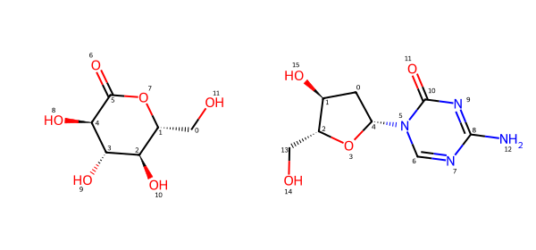
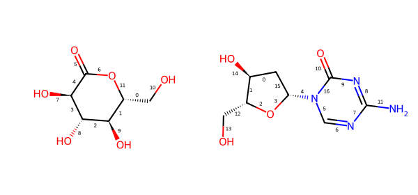
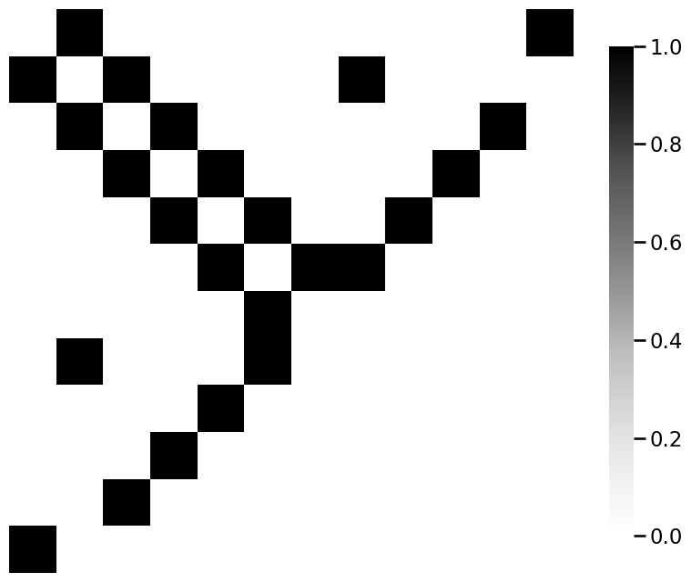
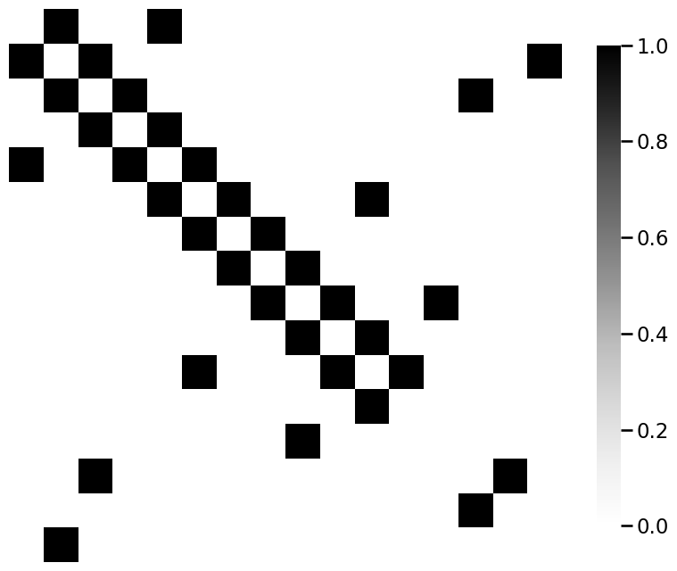

Code Reproducibility#
from torch_geometric.datasets import MoleculeNet
dataset = MoleculeNet(root='data/clintox', name='ClinTox')
print(f'Dataset: {dataset}\nNumber of molecules/graphs: {len(dataset)}\nNumber of classes: {dataset.num_classes}')
Dataset: ClinTox(1480)
Number of molecules/graphs: 1480
Number of classes: 2
mols = dataset[26], dataset[83]
for m in mols:
print(m.smiles)
C([C@@H]1[C@H]([C@@H]([C@H](C(=O)O1)O)O)O)O
C1[C@@H]([C@H](O[C@H]1N2C=NC(=NC2=O)N)CO)O
from rdkit import Chem
from rdkit.Chem.Draw import rdMolDraw2D
from IPython.display import SVG
smiles = [Chem.MolFromSmiles(m.smiles) for m in mols]
d2d = rdMolDraw2D.MolDraw2DSVG(600,280,300,280)
d2d.drawOptions().addAtomIndices = True
d2d.DrawMolecules(smiles)
d2d.FinishDrawing()
SVG(d2d.GetDrawingText())

for i,m in enumerate(mols):
print(f'Molecule {i+1}: Number of atoms={m.x.shape[0]}, Features per atom={m.x.shape[1]}')
Molecule 1: Number of atoms=12, Features per atom=9
Molecule 2: Number of atoms=16, Features per atom=9
d2d = rdMolDraw2D.MolDraw2DSVG(600,280,300,280)
d2d.drawOptions().addBondIndices = True
d2d.DrawMolecules(smiles)
d2d.FinishDrawing()
SVG(d2d.GetDrawingText())

import numpy as np
_process = lambda x: [e[0] for e in np.split(x, 2)]
def adj_from_edgelist(molecule):
"""
A function that takes a molecule edgelist and produces an adjacency matrix.
"""
# the number of nodes is the number of atoms (rows of .x attribute)
n = molecule.x.shape[0]
# the adjacency matrix is n x n
A = np.zeros((n, n))
edgelist = m.edge_index.numpy()
# loop over the edges e_k, and for each edge, unpack the
# nodes that are incident it. for this pair of nodes,
# change the adjacency matrix entry to 1
for e_k, (i, j) in enumerate(zip(*_process(edgelist))):
A[i, j] = 1
return A
from graphbook_code import heatmap
for m_i, m in enumerate(mols):
A = adj_from_edgelist(m)
heatmap(A)


import torch
# for notebook reproducibility
torch.manual_seed(12345)
dataset = dataset.shuffle()
train_dataset = dataset[:-150]
test_dataset = dataset[-150:]
print(f'Number of training networks: {len(train_dataset)}')
print(f'Number of test networks: {len(test_dataset)}')
Number of training networks: 1330
Number of test networks: 150
from torch_geometric.loader import DataLoader
train_loader = DataLoader(train_dataset, batch_size=64, shuffle=True)
test_loader = DataLoader(test_dataset, batch_size=64, shuffle=False)
for step, data in enumerate(iter(train_loader)):
print(f'Step {step + 1}:')
print(f'Number of networks in the current batch: {data.num_graphs}')
print(data)
Step 1:
Number of networks in the current batch: 64
DataBatch(x=[1778, 9], edge_index=[2, 3824], edge_attr=[3824, 3], smiles=[64], y=[64, 2], batch=[1778], ptr=[65])
Step 2:
Number of networks in the current batch: 64
DataBatch(x=[1664, 9], edge_index=[2, 3568], edge_attr=[3568, 3], smiles=[64], y=[64, 2], batch=[1664], ptr=[65])
Step 3:
Number of networks in the current batch: 64
DataBatch(x=[1811, 9], edge_index=[2, 3850], edge_attr=[3850, 3], smiles=[64], y=[64, 2], batch=[1811], ptr=[65])
Step 4:
Number of networks in the current batch: 64
DataBatch(x=[1475, 9], edge_index=[2, 3140], edge_attr=[3140, 3], smiles=[64], y=[64, 2], batch=[1475], ptr=[65])
Step 5:
Number of networks in the current batch: 64
DataBatch(x=[1877, 9], edge_index=[2, 4016], edge_attr=[4016, 3], smiles=[64], y=[64, 2], batch=[1877], ptr=[65])
Step 6:
Number of networks in the current batch: 64
DataBatch(x=[1669, 9], edge_index=[2, 3576], edge_attr=[3576, 3], smiles=[64], y=[64, 2], batch=[1669], ptr=[65])
Step 7:
Number of networks in the current batch: 64
DataBatch(x=[1637, 9], edge_index=[2, 3484], edge_attr=[3484, 3], smiles=[64], y=[64, 2], batch=[1637], ptr=[65])
Step 8:
Number of networks in the current batch: 64
DataBatch(x=[1612, 9], edge_index=[2, 3392], edge_attr=[3392, 3], smiles=[64], y=[64, 2], batch=[1612], ptr=[65])
Step 9:
Number of networks in the current batch: 64
DataBatch(x=[1630, 9], edge_index=[2, 3522], edge_attr=[3522, 3], smiles=[64], y=[64, 2], batch=[1630], ptr=[65])
Step 10:
Number of networks in the current batch: 64
DataBatch(x=[1595, 9], edge_index=[2, 3394], edge_attr=[3394, 3], smiles=[64], y=[64, 2], batch=[1595], ptr=[65])
Step 11:
Number of networks in the current batch: 64
DataBatch(x=[1612, 9], edge_index=[2, 3426], edge_attr=[3426, 3], smiles=[64], y=[64, 2], batch=[1612], ptr=[65])
Step 12:
Number of networks in the current batch: 64
DataBatch(x=[1575, 9], edge_index=[2, 3384], edge_attr=[3384, 3], smiles=[64], y=[64, 2], batch=[1575], ptr=[65])
Step 13:
Number of networks in the current batch: 64
DataBatch(x=[1825, 9], edge_index=[2, 3930], edge_attr=[3930, 3], smiles=[64], y=[64, 2], batch=[1825], ptr=[65])
Step 14:
Number of networks in the current batch: 64
DataBatch(x=[1572, 9], edge_index=[2, 3366], edge_attr=[3366, 3], smiles=[64], y=[64, 2], batch=[1572], ptr=[65])
Step 15:
Number of networks in the current batch: 64
DataBatch(x=[1684, 9], edge_index=[2, 3558], edge_attr=[3558, 3], smiles=[64], y=[64, 2], batch=[1684], ptr=[65])
Step 16:
Number of networks in the current batch: 64
DataBatch(x=[1644, 9], edge_index=[2, 3530], edge_attr=[3530, 3], smiles=[64], y=[64, 2], batch=[1644], ptr=[65])
Step 17:
Number of networks in the current batch: 64
DataBatch(x=[1689, 9], edge_index=[2, 3598], edge_attr=[3598, 3], smiles=[64], y=[64, 2], batch=[1689], ptr=[65])
Step 18:
Number of networks in the current batch: 64
DataBatch(x=[1837, 9], edge_index=[2, 3862], edge_attr=[3862, 3], smiles=[64], y=[64, 2], batch=[1837], ptr=[65])
Step 19:
Number of networks in the current batch: 64
DataBatch(x=[1496, 9], edge_index=[2, 3162], edge_attr=[3162, 3], smiles=[64], y=[64, 2], batch=[1496], ptr=[65])
Step 20:
Number of networks in the current batch: 64
DataBatch(x=[1683, 9], edge_index=[2, 3598], edge_attr=[3598, 3], smiles=[64], y=[64, 2], batch=[1683], ptr=[65])
Step 21:
Number of networks in the current batch: 50
DataBatch(x=[1411, 9], edge_index=[2, 3012], edge_attr=[3012, 3], smiles=[50], y=[50, 2], batch=[1411], ptr=[51])
from torch import nn
from torch.nn import Linear
import torch.nn.functional as F
from torch_geometric.nn import GCNConv
from torch_geometric.nn import global_mean_pool
torch.manual_seed(12345)
class GCN(nn.Module):
def __init__(self, hidden_channels):
super(GCN, self).__init__()
self.conv1 = GCNConv(dataset.num_node_features, hidden_channels)
self.conv2 = GCNConv(hidden_channels, hidden_channels)
self.conv3 = GCNConv(hidden_channels, hidden_channels)
self.lin = Linear(hidden_channels, dataset.num_classes, bias=False)
def forward(self, x, edge_index, batch):
# 1. Obtain node embeddings via convolutional layers
x = self.conv1(x, edge_index)
x = x.relu()
x = self.conv2(x, edge_index)
x = x.relu()
x = self.conv3(x, edge_index)
# 2. Readout layer to produce network embedding
x = global_mean_pool(x, batch) # [batch_size, hidden_channels]
# 3. Apply a prediction classifier to the network embedding
x = self.lin(x)
return x
model = GCN(hidden_channels=64)
print(model)
GCN(
(conv1): GCNConv(9, 64)
(conv2): GCNConv(64, 64)
(conv3): GCNConv(64, 64)
(lin): Linear(in_features=64, out_features=2, bias=False)
)
model = GCN(hidden_channels=64)
optimizer = torch.optim.Adam(model.parameters(), lr=0.0001)
criterion = torch.nn.CrossEntropyLoss()
def train():
model.train()
for data in train_loader: # Iterate in batches over the training dataset.
out = model(data.x.float(), data.edge_index, data.batch) # Perform a single forward pass.
# Handle a pyg bug where last element in batch may be all zeros and excluded in the model output.
# https://github.com/pyg-team/pytorch_geometric/issues/1813
num_batch = out.shape[0]
loss = criterion(out, data.y[:num_batch, 0].long()) # Compute the loss.
loss.backward() # Derive gradients.
optimizer.step() # Update parameters based on gradients.
optimizer.zero_grad() # Clear gradients.
def test(loader):
model.eval()
correct = 0
for data in loader: # Iterate in batches over the training/test dataset.
out = model(data.x.float(), data.edge_index, data.batch)
pred = out.argmax(dim=1) # Use the class with highest probability.
num_batch = pred.shape[0]
correct += int((pred == data.y[:num_batch, 0]).sum()) # Check against ground-truth labels.
return correct / len(loader.dataset) # Derive ratio of correct predictions.
R = 10 # number of epochs
for epoch in range(0, R):
train()
train_acc = test(train_loader)
test_acc = test(test_loader)
print(f'Epoch: {epoch:03d}, Train Acc: {train_acc:.4f}, Test Acc: {test_acc:.4f}')
Epoch: 000, Train Acc: 0.9353, Test Acc: 0.9467
Epoch: 001, Train Acc: 0.9353, Test Acc: 0.9467
Epoch: 002, Train Acc: 0.9353, Test Acc: 0.9467
Epoch: 003, Train Acc: 0.9353, Test Acc: 0.9467
Epoch: 004, Train Acc: 0.9353, Test Acc: 0.9467
Epoch: 005, Train Acc: 0.9353, Test Acc: 0.9467
Epoch: 006, Train Acc: 0.9353, Test Acc: 0.9467
Epoch: 007, Train Acc: 0.9353, Test Acc: 0.9467
Epoch: 008, Train Acc: 0.9353, Test Acc: 0.9467
Epoch: 009, Train Acc: 0.9353, Test Acc: 0.9467
import numpy as np
# define the node names
node_names = np.array(["SI", "MH", "BK", "Q", "BX"])
# define the adjacency matrix
A = np.array([[0,0,1,0,0], # Staten Island neighbors Brooklyn
[0,0,1,1,1], # Manhattan Neighbors all but Staten Island
[1,1,0,1,0], # Brooklyn neighbors all but Bronx
[0,1,1,0,1], # Queens neighbors all but Staten Island
[0,1,0,1,0]]) # Bronx neighbors Manhattan and Queens
# compute the degree of each node
di = A.sum(axis=0)
# the probability matrix is the adjacency divided by
# degree of the starting node
P = (A / di).T
x0 = np.array([0,1,0,0,0]) # x vector indicating we start at MH
ps0 = P.T @ x0 # p vector for timestep 1 starting at node MH at time 0
# choose the next node using the probability vector we calculated
next_node = np.random.choice(range(0, len(node_names)), p=ps0)
print(f"Next node: {node_names[next_node]:s}")
Next node: BK
p = 5 # return parameter
q = 1/2 # in-out parameter
bias_vector = np.ones(len(node_names))
bias_vector[node_names == "BX"] = 1/q
bias_vector[node_names == "BK"] = 1/p
xt = [0, 1, 0, 0, 0] # starting vector at MH
pst = P.T @ xt # probability vector is Pt*x
bias_factors = pst*bias_vector
biased_pst = bias_factors/bias_factors.sum()
# choose the next node using the second-order biased transition probability
next_node = np.random.choice(range(0, len(node_names)), p=biased_pst)
print(f"Next node: {node_names[next_node]:s}")
Next node: Q
from graphbook_code import dcsbm
nk = 100 # 100 nodes per community
zs = np.repeat([1, 2], nk)
B = np.array([[0.6, 0.3], [0.3, 0.6]])
theta = b = np.repeat([1, .2, 1, .2], nk // 2)
deg_map = {1: "Core", 0.2: "Per."}
zs_deg = [f"{deg_map[theta[i]]:s}" for i in range(len(theta))]
zs_aug = [f"{z:d}, {deg:s}" for z, deg in zip(zs, zs_deg)]
A, P = dcsbm(zs, theta, B, return_prob=True)
from graspologic.embed import node2vec_embed
import networkx as nx
p=1; q=10; T=200; r=500
d = 4
np.random.seed(0)
Xhat1, _ = node2vec_embed(nx.from_numpy_array(A),
return_hyperparameter=float(p), inout_hyperparameter=float(q),
dimensions=d, num_walks=r, walk_length=T)
p=1; q=1/10; T=200; r=500
d = 4
np.random.seed(0)
Xhat2, _ = node2vec_embed(nx.from_numpy_array(A), return_hyperparameter=float(p), inout_hyperparameter=float(q),
dimensions=d, num_walks=r, walk_length=T)